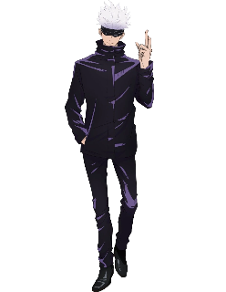

Годжо Сатору
Годзё Сатору — загадочный и чрезвычайно могущественный колдун из «Дзюдзюцу Кайсен». Известный своими поразительными повязками на глазах и безграничными способностями, он излучает атмосферу непобедимости.